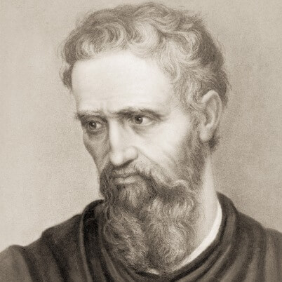
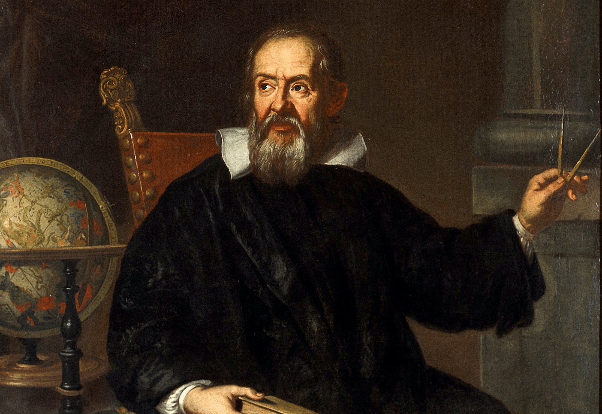

Leonardo da Vinci (1452 – 1519)

Leonardo da Vinci was an Italian polymath whose talents spanned painting, sculpture, engineering, anatomy, architecture, and science.
Widely regarded as the epitome of the Renaissance man, Leonardo’s work combined artistic brilliance with scientific curiosity, leaving a profound impact on art, science, and invention.
Early Life
Leonardo was born on April 15, 1452, in Vinci, Italy, the illegitimate son of a notary, Piero da Vinci, and a peasant woman, Caterina.
From a young age, he displayed extraordinary artistic talent, as well as an insatiable curiosity about the natural world.
He received informal education in Latin, geometry, and mathematics, and was apprenticed at age 14 to the renowned artist Andrea del Verrocchio in Florence.
There he learned painting, sculpture, drafting, and mechanical arts, developing the skills and observational precision that would define his career.
Major Contributions / Career
Leonardo’s artistic achievements include masterpieces such as the Mona Lisa, The Last Supper, and the Vitruvian Man.
He pioneered techniques such as sfumato and chiaroscuro, influencing generations of artists.
Beyond art, Leonardo kept meticulous notebooks filled with sketches and ideas about anatomy, flight, engineering, hydraulics, and weaponry.
He conceptualized helicopters, tanks, and bridges centuries before their practical realization.
His work was characterized by detailed observation, experimentation, and a relentless quest for understanding the principles underlying nature and human life.
Scientific and Cultural Impact
Leonardo da Vinci’s scientific studies were revolutionary for his time.
He dissected human bodies to understand anatomy, studied the movement of water, and explored optics and light.
His combination of art and science exemplified the Renaissance ideal of interdisciplinary study.
Leonardo’s notebooks inspired future scientists, engineers, and artists, while his artistic works continue to define the highest standards of creativity, technical skill, and human expression.
Final Years / Legacy
Leonardo spent his final years in France, under the patronage of King Francis I, continuing to work on art, engineering projects, and scientific observations until his death on May 2, 1519.
He is remembered as one of history’s greatest geniuses, whose innovations in art, science, and engineering shaped Western thought and creativity.
Leonardo da Vinci’s legacy endures as a symbol of curiosity, ingenuity, and the limitless potential of human intellect.
Michelangelo Buonarroti (1475 – 1564)

Michelangelo was an Italian sculptor, painter, architect, and poet, renowned as one of the most influential artists of the Renaissance.
His work combined physical mastery with emotional depth, shaping the trajectory of Western art for centuries.
Michelangelo’s masterpieces demonstrate his exceptional skill, vision, and profound understanding of the human form.
Early Life
Michelangelo was born on March 6, 1475, in Caprese, Italy, into a middle-class family.
From a young age, he showed artistic talent and was apprenticed to painter Domenico Ghirlandaio at thirteen.
He later studied classical sculpture, immersing himself in the study of anatomy, proportion, and form.
His early exposure to both painting and sculpture laid the foundation for a career marked by versatility, technical mastery, and artistic innovation.
Major Contributions / Career
Michelangelo’s contributions to art are monumental.
His sculptures, including David, Pietà, and Moses, demonstrate lifelike realism, emotional intensity, and idealized beauty.
As a painter, his work on the Sistine Chapel ceiling and The Last Judgment remains iconic, blending narrative complexity with technical brilliance.
Michelangelo also contributed to architecture, designing structures such as the Laurentian Library and playing a major role in the construction of St. Peter’s Basilica in Vatican City.
Throughout his career, he combined technical skill, imagination, and philosophical depth, influencing countless artists in Europe and beyond.
Artistic Style and Influence
Michelangelo’s style is characterized by mastery of anatomy, dramatic expression, and monumental scale.
He sought to depict both the physical beauty and inner emotions of his subjects, creating art that conveys human experience and spiritual depth.
His influence shaped Renaissance art, inspiring a new understanding of human form, proportion, and perspective.
Michelangelo’s ability to blend technical mastery with expressive power made him one of the most revered artists in history.
Final Years / Legacy
Michelangelo lived a long life, continuing to create art into his late eighties.
He died on February 18, 1564, in Rome, leaving a vast body of work encompassing sculpture, painting, architecture, and poetry.
Michelangelo is remembered as a genius whose artistry redefined human creativity and inspired generations.
His works continue to be celebrated for their technical brilliance, emotional resonance, and lasting cultural impact.
Galileo Galilei (1564 – 1642)

Galileo Galilei was an Italian astronomer, physicist, and mathematician, widely regarded as the father of modern science.
He made groundbreaking discoveries in astronomy, physics, and scientific methodology, challenging traditional views and laying the foundation for modern science.
Early Life
Galileo was born on February 15, 1564, in Pisa, Italy, to a family with a strong interest in music and science.
He studied medicine at the University of Pisa but became fascinated with mathematics and natural philosophy.
Galileo’s early experiments included studying motion, falling bodies, and the properties of pendulums, revealing his empirical and analytical approach to understanding nature.
Major Contributions / Career
Galileo’s contributions spanned physics, astronomy, and scientific methodology.
He improved the telescope and made critical observations, including the moons of Jupiter, phases of Venus, and sunspots.
These discoveries provided evidence supporting the heliocentric model of the solar system, challenging prevailing geocentric beliefs.
Galileo also formulated laws of motion, studied acceleration, and explored the principles of inertia, laying the groundwork for Newtonian physics.
His use of observation, experimentation, and mathematical analysis established principles of modern scientific inquiry.
Scientific Impact and Controversy
Galileo’s support for the Copernican system led to conflict with the Catholic Church, resulting in his trial for heresy and house arrest.
Despite these challenges, he continued his scientific work, writing influential books such as "Dialogue Concerning the Two Chief World Systems" and "Two New Sciences."
Galileo’s approach emphasized evidence, experimentation, and logical reasoning, influencing generations of scientists and fundamentally changing humanity’s understanding of the universe.
Final Years / Legacy
Galileo died on January 8, 1642, in Arcetri, Italy.
He is remembered as one of the greatest scientific minds in history, whose discoveries and methods transformed science.
Galileo’s commitment to observation, experimentation, and reason established him as a pioneer of the scientific revolution, and his work continues to inspire inquiry, innovation, and understanding of the natural world.
William Shakespeare (1564 – 1616)

William Shakespeare was an English playwright, poet, and actor, widely regarded as the greatest writer in the English language and one of the most influential dramatists in world history.
His works encompass tragedy, comedy, history, and poetry, and they continue to shape literature, theater, and cultural expression worldwide.
Early Life
Shakespeare was born in 1564 in Stratford-upon-Avon, England, to John Shakespeare, a glove-maker and alderman, and Mary Arden.
He received basic education in grammar, Latin, and literature at the local grammar school.
Details of his early life remain limited, but his exposure to classical literature and storytelling nurtured a deep understanding of human nature, language, and drama, laying the foundation for his extraordinary literary career.
Major Contributions / Career
Shakespeare’s body of work includes 39 plays, 154 sonnets, and numerous poems.
His plays such as Hamlet, Macbeth, Othello, King Lear, Romeo and Juliet, and Julius Caesar explore themes of ambition, love, power, morality, and human psychology.
Shakespeare’s writing demonstrates mastery of language, character development, plot, and dramatic structure, revolutionizing English theater and poetry.
He worked as an actor and playwright in London, performing at venues such as The Globe Theatre and contributing to the cultural life of the Elizabethan and Jacobean eras.
Literary Style and Influence
Shakespeare is known for his poetic and dramatic brilliance, using techniques such as iambic pentameter, wordplay, metaphor, and soliloquy.
He explored universal themes, making his works relatable across cultures and generations.
Shakespeare influenced literature, theater, language, and education, with his vocabulary, phrases, and storytelling techniques still shaping modern English.
His exploration of human emotion, ethical dilemmas, and social dynamics continues to resonate with audiences and scholars worldwide.
Final Years / Legacy
Shakespeare retired to Stratford-upon-Avon, where he died on April 23, 1616.
His legacy endures as one of the most celebrated writers in history.
Shakespeare’s plays and poetry continue to be performed, studied, and adapted, and his contributions to literature and culture have made him an enduring symbol of human creativity, insight, and artistic excellence.